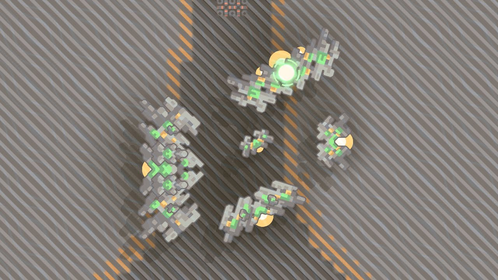
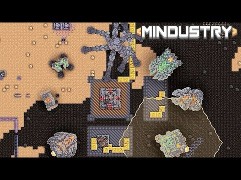
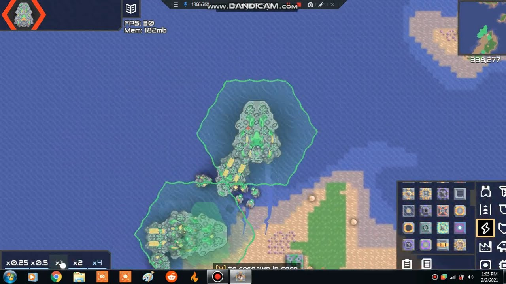

Введение
В Mindustry каждый юнит играет свою роль — от лёгких разведчиков до тяжёлых осадных мехов. Но настоящая сила раскрывается, когда ты используешь их вместе, комбинируя способности и роли в одной команде.

1. Роли юнитов и их взаимодействие
Разделяй юнитов по ролям: атакующие, поддерживающие, ремонтные и осадные. Если собрать их в сбалансированный отряд, каждый тип будет усиливать других.
💡 Совет: отправляй ремонтные дроны в тыл, а атакующих — вперёд. Так они не будут мешать друг другу.

2. Синергия между типами мехов
Лёгкие юниты отвлекают врага, создавая хаос, пока тяжёлые мехи наносят основной урон. Воздушные дроны могут прикрывать их сверху, уничтожая турели и энергетические узлы.
Такой подход позволяет минимизировать потери и сохранять контроль над полем боя.
3. Координация с базой
Командная работа невозможна без связи с базой. Используй логические узлы, чтобы управлять движением юнитов и распределять задачи. Настрой маршруты патрулирования и зоны атаки — это уменьшит хаос и повысит эффективность.
4. Поддержка и ремонт
Даже самые мощные армии погибают без своевременного ремонта. Создай в команде звено поддержки — юнитов, оснащённых ремонтными лучами или транспортировкой боеприпасов.
⚙️ Не забывай про баланс — если вся команда атакующая, то малейший урон может стать фатальным.
5. Использование преимуществ карты
Каждый биом даёт свои возможности: ледяные карты — для защиты, пустынные — для скорости, а лавовые — для мощных атак. Комбинируй юнитов в зависимости от местности и врагов, чтобы добиться максимальной эффективности.

Заключение
Командная синергия юнитов — это ключ к победе на поздних этапах игры. Подбирай состав команды, планируй взаимодействие и обеспечивай логистику. Тогда твоя армия станет по-настоящему неостановимой.
Помни: сила не в количестве юнитов, а в их слаженности и взаимной поддержке.